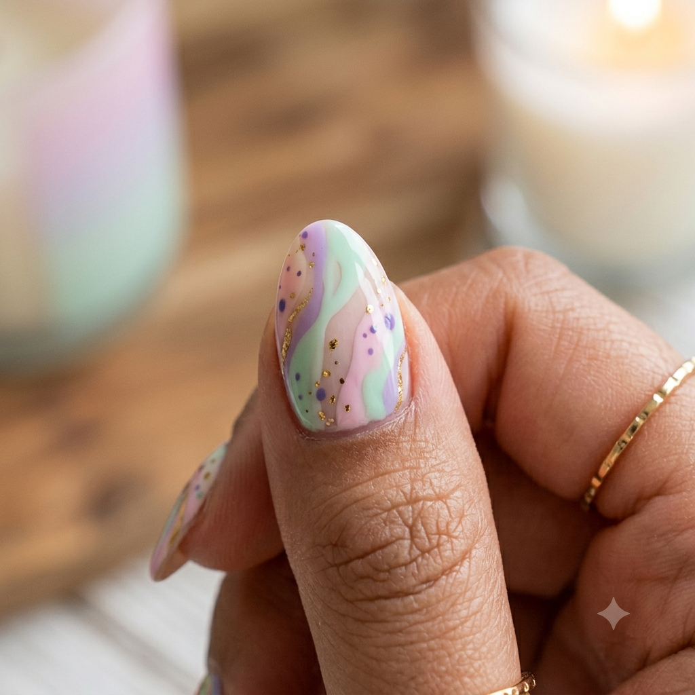

scandio nails
Vou compartilhar conhecimentos sobre unhas e explicar sobre tecnicas para poder facilitar a vida de muitas pessoas
Vou compartilhar conhecimentos sobre unhas e explicar sobre tecnicas para poder facilitar a vida de muitas pessoas

Olá! Seja muito bem-vindo(a) ao meu blog! Aqui você vai encontrar dicas de cuidados com as unhas, inspirações de nail art, tendências de esmaltes, passo a passo de decorações e muito mais. Sou apaixonada pelo mundo das unhas e criei este espaço para compartilhar ideias, aprender junto com vocês e ajudar quem ama ter unhas lindas e bem cuidadas. Nos próximos posts vou trazer: Dicas para fortalecer as unhas. Tendências de esmaltes. Decorações fáceis para fazer em casa. Cuidados com cutículas. Inspirações para todas as ocasiões. Espero que vocês gostem desse novo espaço! Deixe um comentário contando qual estilo de unha você mais ama.